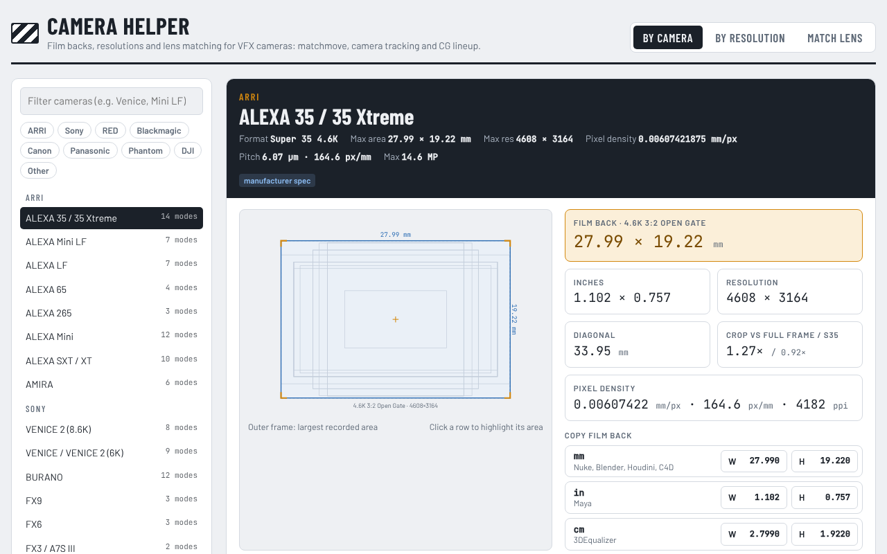
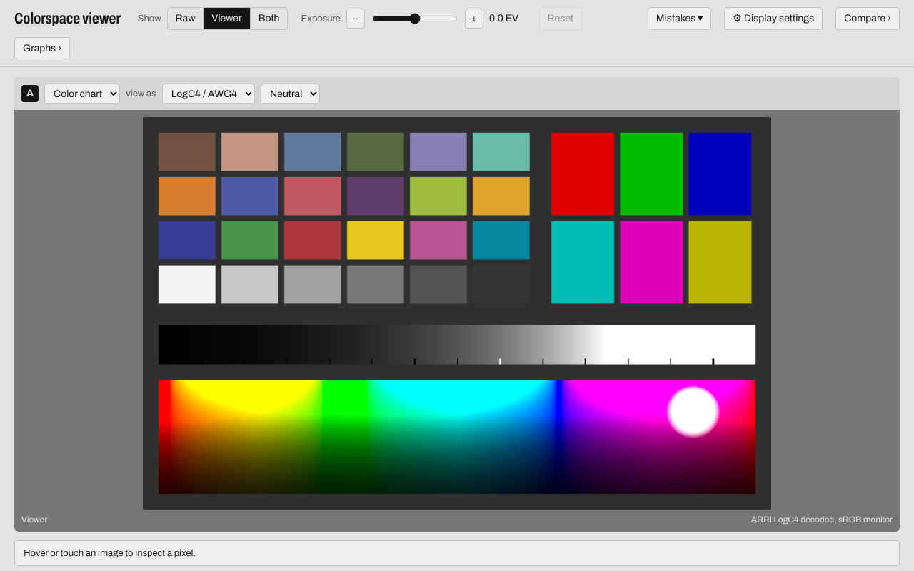

Camera Helper
Film backs, resolutions and lens matching for every recording mode of every major cinema camera. Search by camera or by resolution, match lenses between formats, and copy values for Nuke, Maya or 3DEqualizer.

Colorspace Viewer
See how an image looks in sRGB, Rec.709, P3, ACES and camera log spaces. Compare side by side, load your own EXRs and LUTs, and explore common colorspace mistakes.